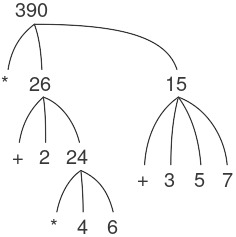
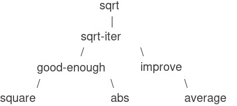

1.1 Các thành phần của Programming
Một ngôn ngữ programming mạnh mẽ không chỉ là công cụ để ra lệnh cho máy tính thực hiện các tác vụ. Ngôn ngữ còn đóng vai trò như một khung tư duy mà trong đó chúng ta tổ chức các ý tưởng về processes (quá trình). Vì vậy, khi mô tả một ngôn ngữ, chúng ta nên chú ý đặc biệt đến các phương tiện mà ngôn ngữ cung cấp để kết hợp những ý tưởng đơn giản nhằm hình thành các ý tưởng phức tạp hơn. Mỗi ngôn ngữ mạnh mẽ đều có ba cơ chế để thực hiện điều này:
- primitive expressions (biểu thức nguyên thủy), đại diện cho những thực thể đơn giản nhất mà ngôn ngữ quan tâm,
- means of combination (phương tiện kết hợp), bằng đó các phần tử phức hợp được xây dựng từ những phần tử đơn giản hơn, và
- means of abstraction (phương tiện trừu tượng hóa), nhờ đó các phần tử phức hợp có thể được đặt tên và thao tác như các đơn vị.
Trong programming, chúng ta làm việc với hai loại thành phần: procedures (thủ tục) và data (dữ liệu). (Sau này chúng ta sẽ phát hiện rằng chúng thực ra không hẳn là khác biệt.) Nói một cách không chính thức, data là “thứ” mà chúng ta muốn thao tác, còn procedures là mô tả các quy tắc để thao tác dữ liệu đó. Do đó, bất kỳ ngôn ngữ programming mạnh mẽ nào cũng phải có khả năng mô tả primitive data và primitive procedures, đồng thời có phương thức để kết hợp và trừu tượng hóa procedures và data.
Trong chương này, chúng ta sẽ chỉ làm việc với numerical data (dữ liệu số) đơn giản để có thể tập trung vào các quy tắc xây dựng procedures.1 Ở các chương sau, chúng ta sẽ thấy rằng các quy tắc này cũng cho phép ta xây dựng procedures để thao tác với compound data (dữ liệu phức hợp).
1.1.1 Expressions
Một cách dễ dàng để bắt đầu học programming là quan sát một số tương tác điển hình với interpreter (trình thông dịch) của ngôn ngữ Scheme (một dialect của Lisp). Hãy tưởng tượng bạn đang ngồi trước một máy tính. Bạn gõ vào một expression (biểu thức), và interpreter phản hồi bằng cách hiển thị kết quả của việc evaluating (tính toán/đánh giá) biểu thức đó.
Một loại primitive expression mà bạn có thể gõ là một số. (Chính xác hơn, biểu thức bạn gõ gồm các chữ số đại diện cho số đó ở hệ thập phân.) Nếu bạn đưa cho Lisp một số
486
interpreter sẽ phản hồi bằng cách in ra2
486
Các expressions biểu diễn số có thể được kết hợp với một expression biểu diễn một primitive procedure (chẳng hạn như + hoặc *) để hình thành một compound expression (biểu thức phức hợp) mô tả việc áp dụng procedure đó lên các số. Ví dụ:
(+ 137 349)
486
(- 1000 334)
666
(* 5 99)
495
(/ 10 5)
2
(+ 2.7 10)
12.7
Những expressions như trên, được tạo ra bằng cách đặt một danh sách các expressions trong cặp ngoặc đơn để biểu thị việc áp dụng procedure, được gọi là combinations (tổ hợp). Phần tử ngoài cùng bên trái trong danh sách được gọi là operator (toán tử), và các phần tử còn lại được gọi là operands (toán hạng). Giá trị của một combination được thu được bằng cách áp dụng procedure mà operator chỉ định lên các arguments (đối số) chính là giá trị của các operands.
Quy ước đặt operator ở bên trái operands được gọi là prefix notation (ký pháp tiền tố), và ban đầu có thể hơi khó hiểu vì nó khác biệt đáng kể với quy ước toán học thông thường. Tuy nhiên, prefix notation có một số ưu điểm. Một trong số đó là nó có thể chứa các procedures có số lượng arguments tùy ý, như trong các ví dụ sau:
(+ 21 35 12 7)
75
(* 25 4 12)
1200
Không thể xảy ra sự mơ hồ, vì operator luôn là phần tử ngoài cùng bên trái và toàn bộ combination được bao bởi dấu ngoặc đơn.
Ưu điểm thứ hai của prefix notation là nó mở rộng một cách trực tiếp để cho phép combinations được nested (lồng nhau), tức là có những combinations mà các phần tử của chúng lại chính là combinations:
(+ (* 3 5) (- 10 6))
19
Về nguyên tắc, độ sâu của việc nested và độ phức tạp tổng thể của expressions mà interpreter Lisp có thể tính toán là không giới hạn. Chính con người chúng ta mới là những người dễ bị rối khi gặp những biểu thức tương đối đơn giản như:
(+ (* 3 (+ (* 2 4) (+ 3 5))) (+ (- 10 7) 6))
trong khi interpreter có thể dễ dàng tính ra kết quả 57. Chúng ta có thể tự giúp mình bằng cách viết biểu thức này theo dạng
(+ (* 3
(+ (* 2 4)
(+ 3 5)))
(+ (- 10 7)
6))
theo một quy ước định dạng gọi là pretty-printing (in đẹp), trong đó mỗi combination dài được viết sao cho các operands được căn thẳng hàng theo chiều dọc. Các thụt lề như vậy hiển thị rõ cấu trúc của expression.3
Ngay cả với những expressions phức tạp, interpreter luôn vận hành theo cùng một chu trình cơ bản: Nó đọc một expression từ terminal, tính toán biểu thức đó, và in ra kết quả. Chế độ hoạt động này thường được diễn đạt bằng cách nói rằng interpreter chạy trong một vòng lặp read-eval-print loop. Hãy đặc biệt chú ý rằng không cần phải ra lệnh tường minh cho interpreter in ra giá trị của biểu thức.4
1.1.2 Naming and the Environment
Một khía cạnh quan trọng của một ngôn ngữ programming là phương tiện mà nó cung cấp để sử dụng tên nhằm tham chiếu đến các đối tượng tính toán. Chúng ta nói rằng tên xác định một variable (biến), mà value (giá trị) của nó là đối tượng đó.
Trong dialect Scheme của Lisp, chúng ta đặt tên bằng define. Việc gõ
(define size 2)
khiến interpreter liên kết giá trị 2 với tên size.5 Một khi tên size đã được gắn với số 2, chúng ta có thể tham chiếu đến giá trị 2 bằng tên đó:
size
2
(* 5 size)
10
Dưới đây là thêm một vài ví dụ về việc sử dụng define:
(define pi 3.14159)
(define radius 10)
(* pi (* radius radius))
314.159
(define circumference (* 2 pi radius))
circumference
62.8318
Define là phương tiện trừu tượng hóa đơn giản nhất của ngôn ngữ, vì nó cho phép chúng ta sử dụng những tên đơn giản để tham chiếu đến kết quả của các phép toán phức hợp, chẳng hạn như circumference được tính ở trên. Nói chung, các đối tượng tính toán có thể có cấu trúc rất phức tạp, và sẽ cực kỳ bất tiện nếu phải nhớ và lặp lại chi tiết của chúng mỗi lần muốn sử dụng. Thật vậy, các chương trình phức tạp được xây dựng bằng cách tạo ra, từng bước một, các đối tượng tính toán có độ phức tạp ngày càng tăng. Interpreter khiến cho việc xây dựng chương trình theo từng bước như vậy trở nên đặc biệt tiện lợi vì các liên kết tên-đối tượng có thể được tạo ra dần dần qua những lần tương tác kế tiếp. Đặc điểm này khuyến khích sự phát triển và thử nghiệm chương trình theo cách gia tăng và phần lớn chịu trách nhiệm cho việc chương trình Lisp thường bao gồm một số lượng lớn các procedures tương đối đơn giản.
Rõ ràng việc có thể gắn các giá trị với các ký hiệu rồi sau đó truy xuất lại chúng có nghĩa là interpreter phải duy trì một dạng bộ nhớ nào đó để theo dõi các cặp tên-đối tượng. Bộ nhớ này được gọi là environment (môi trường) (chính xác hơn là global environment (môi trường toàn cục), vì sau này chúng ta sẽ thấy rằng một phép tính có thể liên quan đến nhiều environments khác nhau)6.
Chapter 3 sẽ cho thấy rằng khái niệm environment này rất quan trọng, cả trong việc hiểu cách interpreter hoạt động lẫn trong việc hiện thực hóa các interpreters.
1.1.3 Evaluating Combinations
Một trong những mục tiêu của chúng ta trong chương này là phân tách các vấn đề liên quan đến việc tư duy theo cách procedural (thủ tục). Là một ví dụ, hãy xem xét rằng khi tính toán một combination, chính interpreter cũng đang tuân theo một procedure.
Để tính toán một combination, hãy thực hiện các bước sau:
- Tính toán các subexpressions (biểu thức con) của combination.
- Áp dụng procedure là giá trị của subexpression ngoài cùng bên trái (operator) lên các arguments là giá trị của các subexpressions còn lại (operands).
Ngay cả quy tắc đơn giản này cũng minh họa một số điểm quan trọng về các processes nói chung. Trước hết, hãy chú ý rằng bước đầu tiên quy định rằng để hoàn thành quá trình tính toán một combination, chúng ta phải trước tiên thực hiện quá trình tính toán trên từng phần tử của combination. Do đó, quy tắc tính toán này có bản chất là recursive (đệ quy); tức là, nó bao gồm — như một trong các bước — yêu cầu gọi lại chính quy tắc đó.7
Việc mô tả số như là “dữ liệu đơn giản” thực chất là một sự đánh lừa trắng trợn. Thật ra, cách xử lý số là một trong những khía cạnh khó khăn và dễ gây nhầm lẫn nhất của bất kỳ ngôn ngữ programming nào. Một số vấn đề điển hình là: Một số hệ thống máy tính phân biệt integers (số nguyên), như 2, với real numbers (số thực), như 2.71. Số thực 2.00 có khác với số nguyên 2 không? Các phép toán số học cho số nguyên có giống với các phép toán cho số thực không? 6 chia cho 2 cho ra 3 hay 3.0? Ta có thể biểu diễn số lớn đến mức nào? Biểu diễn được bao nhiêu chữ số thập phân chính xác? Phạm vi của số nguyên có giống với phạm vi của số thực không? Ngoài tất cả những câu hỏi này, dĩ nhiên, còn có một loạt vấn đề về sai số làm tròn và cắt cụt — toàn bộ ngành khoa học phân tích số. Vì trọng tâm của cuốn sách này là thiết kế chương trình quy mô lớn chứ không phải các kỹ thuật số, nên chúng ta sẽ bỏ qua những vấn đề này. Các ví dụ số học trong chương này sẽ thể hiện hành vi làm tròn thường thấy khi sử dụng các phép toán chỉ giữ được một số lượng chữ số thập phân nhất định trong các phép toán phi nguyên.
Trong suốt cuốn sách này, khi muốn nhấn mạnh sự phân biệt giữa đầu vào do người dùng gõ và phản hồi do interpreter in ra, chúng tôi sẽ hiển thị cái sau bằng chữ nghiêng.
Các hệ thống Lisp thường cung cấp những tính năng hỗ trợ người dùng trong việc định dạng biểu thức. Hai tính năng đặc biệt hữu ích là: một tính năng tự động thụt lề đúng vị trí pretty-print mỗi khi bắt đầu dòng mới, và một tính năng làm nổi bật dấu ngoặc mở tương ứng mỗi khi người dùng gõ dấu ngoặc đóng.
Lisp tuân theo quy ước rằng mọi expression đều có một giá trị. Quy ước này, cùng với danh tiếng cũ của Lisp như một ngôn ngữ kém hiệu quả, là nguồn gốc của câu nói đùa của Alan Perlis (mượn lời Oscar Wilde) rằng “Lisp programmers know the value of everything but the cost of nothing.”
Trong cuốn sách này, chúng tôi không hiển thị phản hồi của interpreter khi tính toán các definitions (định nghĩa), vì điều này phụ thuộc rất nhiều vào cách hiện thực cụ thể.
Có thể thấy kỳ lạ rằng quy tắc tính toán nói, trong phần của bước đầu tiên, rằng chúng ta nên tính toán phần tử ngoài cùng bên trái của một combination, bởi vì ở thời điểm này nó chỉ có thể là một operator như + hoặc * đại diện cho một primitive procedure như cộng hoặc nhân. Chúng ta sẽ thấy sau này rằng việc có thể làm việc với những combinations mà operators của chúng lại là các expressions phức hợp là điều hữu ích.
Nhận thấy rằng ý tưởng về recursion (đệ quy) có thể được dùng để diễn đạt một cách súc tích điều mà trong trường hợp của một combination (tổ hợp) lồng nhau sâu sẽ được xem như một quá trình khá phức tạp. Ví dụ, việc tính giá trị của
(* (+ 2 (* 4 6)) (+ 3 5 7))
yêu cầu quy tắc đánh giá được áp dụng cho bốn combination khác nhau. Chúng ta có thể minh họa tiến trình này bằng cách biểu diễn combination dưới dạng một cây, như được thể hiện trong Figure 1.1. Mỗi combination được biểu diễn bằng một nút với các nhánh tương ứng với operator (toán tử) và các operand (toán hạng) phát sinh từ nó. Các nút tận (terminal node – tức là nút không có nhánh nào phát sinh từ chúng) biểu diễn hoặc là toán tử, hoặc là số. Khi nhìn vào việc đánh giá theo cây, ta có thể hình dung rằng các giá trị của các operand “thấm dần lên” (percolate upward), bắt đầu từ các nút tận rồi kết hợp ở các mức ngày càng cao hơn. Nhìn chung, ta sẽ thấy rằng recursion là một kỹ thuật rất mạnh để xử lý các đối tượng phân cấp, dạng cây. Thực tế, dạng “percolate values upward” của quy tắc đánh giá chính là một ví dụ của một kiểu tiến trình tổng quát gọi là tree accumulation (tích lũy theo cây).

Figure 1.1: Tree representation, showing the value of each subcombination.
Tiếp theo, hãy quan sát rằng việc lặp đi lặp lại bước đầu tiên dẫn chúng ta đến chỗ cần phải đánh giá, không phải các combination, mà là các primitive expression (biểu thức nguyên thủy) như số, toán tử dựng sẵn, hoặc các tên khác. Ta xử lý các trường hợp nguyên thủy này bằng cách quy định rằng:
- giá trị của số (numeral) là chính con số mà nó biểu diễn,
- giá trị của các toán tử dựng sẵn là các chuỗi lệnh máy thực hiện các phép toán tương ứng, và
- giá trị của các tên khác là các đối tượng gắn liền với những tên đó trong environment (môi trường).
Ta có thể xem quy tắc thứ hai là một trường hợp đặc biệt của quy tắc thứ ba bằng cách quy định rằng các symbol (ký hiệu) như + và * cũng được bao gồm trong global environment và được gắn với các chuỗi lệnh máy là “giá trị” của chúng. Điểm mấu chốt cần lưu ý là vai trò của environment trong việc xác định ý nghĩa của các symbol trong biểu thức. Trong một ngôn ngữ tương tác như Lisp, thật vô nghĩa khi nói về giá trị của một biểu thức như (+ x 1) mà không chỉ rõ thông tin nào đó về environment, thứ sẽ cung cấp ý nghĩa cho symbol x (thậm chí cả cho symbol +). Như ta sẽ thấy trong Chapter 3, khái niệm tổng quát về environment như một bối cảnh mà trong đó việc đánh giá diễn ra sẽ đóng một vai trò quan trọng trong việc hiểu cách thực thi chương trình.
Hãy lưu ý rằng quy tắc đánh giá đưa ra ở trên không xử lý các định nghĩa. Chẳng hạn, việc tính (define x 3) không có nghĩa là áp dụng define cho hai đối số, một là giá trị của symbol x và một là 3, bởi vì mục đích của define chính là để gắn x với một giá trị. (Nói cách khác, (define x 3) không phải là một combination.)
Những ngoại lệ cho quy tắc đánh giá tổng quát như vậy được gọi là special forms (biểu thức đặc biệt). Define là ví dụ duy nhất về special form mà chúng ta đã thấy cho đến nay, nhưng chẳng bao lâu nữa ta sẽ gặp thêm các ví dụ khác. Mỗi special form có quy tắc đánh giá riêng. Các loại biểu thức khác nhau (mỗi loại gắn với quy tắc đánh giá riêng của nó) cấu thành cú pháp của ngôn ngữ lập trình. So với hầu hết các ngôn ngữ lập trình khác, Lisp có cú pháp rất đơn giản; nghĩa là, quy tắc đánh giá cho các biểu thức có thể được mô tả bằng một quy tắc tổng quát đơn giản kết hợp với một số ít quy tắc chuyên biệt dành cho các special form.8
1.1.4 Compound Procedures (Thủ tục hợp thành)
Chúng ta đã xác định trong Lisp một số yếu tố cần xuất hiện trong bất kỳ ngôn ngữ lập trình mạnh mẽ nào:
- Numbers và các phép toán số học là dữ liệu và procedure (thủ tục) nguyên thủy.
- Việc lồng các combination cung cấp phương tiện để kết hợp các phép toán.
- Các định nghĩa gắn tên với giá trị cung cấp một phương tiện trừu tượng hóa hạn chế.
Bây giờ chúng ta sẽ học về procedure definition (định nghĩa thủ tục), một kỹ thuật trừu tượng hóa mạnh mẽ hơn nhiều, nhờ đó một phép toán hợp thành có thể được gán cho một tên và sau đó được tham chiếu như một đơn vị.
Chúng ta bắt đầu bằng cách xem xét làm thế nào để diễn đạt ý tưởng “bình phương.” Ta có thể nói, “Bình phương một cái gì đó nghĩa là nhân nó với chính nó.” Điều này được diễn đạt trong ngôn ngữ của chúng ta như sau:
(define (square x) (* x x))
Ta có thể hiểu điều này như sau:
(define (square x) (* x x))
| | | | | |
To square something, multiply it by itself.
Ở đây chúng ta có một compound procedure (thủ tục hợp thành), được gán tên square. Thủ tục này biểu diễn phép toán nhân một cái gì đó với chính nó. Đối tượng cần nhân được gán một tên cục bộ, x, vốn đóng cùng vai trò như đại từ trong ngôn ngữ tự nhiên. Việc đánh giá định nghĩa này tạo ra thủ tục hợp thành đó và gắn nó với tên square.9
Dạng tổng quát của một procedure definition là:
(define (⟨name⟩ ⟨formal parameters⟩) ⟨body⟩)
⟨name⟩ là một symbol sẽ được gắn với định nghĩa thủ tục trong environment.10
⟨formal parameters⟩ là các tên được sử dụng trong body (thân) của thủ tục để tham chiếu đến các đối số tương ứng của thủ tục.
⟨body⟩ là một biểu thức sẽ cho ra giá trị của lời gọi thủ tục khi các tham số hình thức được thay thế bằng các đối số thực mà thủ tục được áp dụng.11
⟨name⟩ và ⟨formal parameters⟩ được nhóm lại trong dấu ngoặc đơn, giống như cách chúng xuất hiện trong một lời gọi thực sự đến thủ tục đang được định nghĩa.
Sau khi đã định nghĩa square, ta có thể dùng nó:
(square 21)
441
(square (+ 2 5))
49
(square (square 3))
81
Ta cũng có thể dùng square làm khối xây dựng trong việc định nghĩa các thủ tục khác. Chẳng hạn, $x^{2} + y^{2}$ có thể được biểu diễn là:
(+ (square x) (square y))
Ta có thể dễ dàng định nghĩa một thủ tục sum-of-squares mà, với hai số bất kỳ làm đối số, tạo ra tổng các bình phương của chúng:
(define (sum-of-squares x y)
(+ (square x) (square y)))
(sum-of-squares 3 4)
25
Bây giờ ta có thể dùng sum-of-squares làm khối xây dựng để tạo ra các thủ tục tiếp theo:
(define (f a)
(sum-of-squares (+ a 1) (* a 2)))
(f 5)
136
Compound procedure được sử dụng theo cách hoàn toàn giống với primitive procedure. Thật vậy, ta không thể biết, chỉ bằng cách nhìn vào định nghĩa của sum-of-squares ở trên, rằng square được xây dựng sẵn trong interpreter giống như + và *, hay được định nghĩa như một compound procedure.
1.1.5 The Substitution Model for Procedure Application (Mô hình thay thế trong việc áp dụng thủ tục)
Để đánh giá một combination mà operator của nó là tên của một compound procedure, interpreter thực hiện gần như cùng một quá trình như đối với combination có operator là tên của một primitive procedure, mà chúng ta đã mô tả trong 1.1.3. Nghĩa là, interpreter đánh giá các thành phần của combination và áp dụng procedure (vốn là giá trị của operator của combination) lên các argument (là các giá trị của operand trong combination).
Ta có thể giả định rằng cơ chế áp dụng primitive procedure lên các argument được xây dựng sẵn trong interpreter. Đối với compound procedure, quá trình áp dụng diễn ra như sau:
Để áp dụng một compound procedure cho các argument, hãy đánh giá body của thủ tục với mỗi tham số hình thức được thay thế bằng đối số tương ứng.
Để minh họa quá trình này, hãy đánh giá combination
(f 5)
trong đó f là thủ tục được định nghĩa trong 1.1.4. Ta bắt đầu bằng cách lấy body của f:
(sum-of-squares (+ a 1) (* a 2))
Sau đó ta thay thế tham số hình thức a bằng đối số 5:
(sum-of-squares (+ 5 1) (* 5 2))
Như vậy, vấn đề được rút gọn thành việc đánh giá một combination với hai operand và một operator sum-of-squares. Việc đánh giá combination này bao gồm ba tiểu vấn đề. Ta phải đánh giá operator để nhận thủ tục cần áp dụng, và ta phải đánh giá các operand để lấy các đối số. Bây giờ (+ 5 1) cho kết quả 6 và (* 5 2) cho kết quả 10, do đó ta phải áp dụng thủ tục sum-of-squares cho 6 và 10. Các giá trị này được thay thế cho tham số hình thức x và y trong body của sum-of-squares, làm cho biểu thức trở thành:
(+ (square 6) (square 10))
Nếu dùng định nghĩa của square, biểu thức này được rút gọn thành:
(+ (* 6 6) (* 10 10))
rút gọn theo phép nhân thành:
(+ 36 100)
và cuối cùng là:
136
Quá trình mà chúng ta vừa mô tả được gọi là substitution model (mô hình thay thế) cho việc áp dụng thủ tục. Nó có thể được coi như một mô hình xác định “ý nghĩa” của việc áp dụng thủ tục, xét trong phạm vi các thủ tục ở chương này. Tuy nhiên, có hai điểm cần nhấn mạnh:
- Mục đích của việc thay thế là để giúp chúng ta suy nghĩ về việc áp dụng thủ tục, chứ không phải để mô tả cách interpreter thực sự hoạt động. Các interpreter điển hình không đánh giá các lời gọi thủ tục bằng cách thao tác văn bản của thủ tục để thay thế các giá trị cho các tham số hình thức. Trên thực tế, “sự thay thế” này được thực hiện bằng cách sử dụng một environment cục bộ cho các tham số hình thức. Chúng ta sẽ bàn kỹ hơn điều này trong Chapter 3 và Chapter 4 khi khảo sát chi tiết việc cài đặt một interpreter.
- Trong suốt cuốn sách này, chúng ta sẽ giới thiệu một chuỗi các mô hình ngày càng phức tạp về cách interpreter hoạt động, cuối cùng sẽ dẫn đến một bản cài đặt hoàn chỉnh của một interpreter và một compiler trong Chapter 5. Substitution model chỉ là mô hình đầu tiên trong số đó—một cách để bắt đầu suy nghĩ một cách hình thức về quá trình đánh giá. Nhìn chung, khi mô hình hóa các hiện tượng trong khoa học và kỹ thuật, chúng ta thường bắt đầu với các mô hình đơn giản, chưa đầy đủ. Khi khảo sát chi tiết hơn, các mô hình đơn giản đó trở nên không đủ và phải được thay thế bằng các mô hình tinh vi hơn. Substitution model cũng không phải ngoại lệ. Đặc biệt, khi chúng ta bàn đến trong Chapter 3 việc sử dụng thủ tục với “mutable data” (dữ liệu có thể thay đổi), ta sẽ thấy substitution model bị phá vỡ và phải được thay thế bằng một mô hình phức tạp hơn về việc áp dụng thủ tục.12
Special syntactic forms that are simply convenient alternative surface structures for things that can be written in more uniform ways are sometimes called syntactic sugar, to use a phrase coined by Peter Landin. In comparison with users of other languages, Lisp programmers, as a rule, are less concerned with matters of syntax. (By contrast, examine any Pascal manual and notice how much of it is devoted to descriptions of syntax.) This disdain for syntax is due partly to the flexibility of Lisp, which makes it easy to change surface syntax, and partly to the observation that many “convenient” syntactic constructs, which make the language less uniform, end up causing more trouble than they are worth when programs become large and complex. In the words of Alan Perlis, “Syntactic sugar causes cancer of the semicolon.”
Observe that có hai thao tác khác nhau được kết hợp ở đây: chúng ta tạo ra thủ tục, và chúng ta gán cho nó tên square. Điều quan trọng là phải phân biệt được hai khái niệm này—tạo thủ tục mà không đặt tên, và gán tên cho thủ tục đã được tạo. Chúng ta sẽ thấy cách làm điều này ở 1.3.2.
Trong suốt cuốn sách này, chúng ta sẽ mô tả cú pháp tổng quát của biểu thức bằng cách sử dụng các ký hiệu in nghiêng được đặt trong dấu ngoặc nhọn—ví dụ, ⟨name⟩—để biểu thị các “chỗ trống” trong biểu thức, vốn sẽ được điền vào khi biểu thức đó thực sự được sử dụng.
Tổng quát hơn, body của thủ tục có thể là một chuỗi các biểu thức. Trong trường hợp đó, interpreter sẽ đánh giá lần lượt từng biểu thức trong chuỗi và trả về giá trị của biểu thức cuối cùng như là giá trị của lời gọi thủ tục.
Mặc dù ý tưởng thay thế có vẻ đơn giản, nhưng lại hóa ra khá phức tạp khi cần đưa ra một định nghĩa toán học chặt chẽ cho tiến trình thay thế. Vấn đề nảy sinh từ khả năng nhầm lẫn giữa các tên được dùng cho tham số hình thức của một thủ tục và các tên (có thể trùng lặp) được dùng trong các biểu thức mà thủ tục có thể được áp dụng. Thực tế, đã có một lịch sử dài những định nghĩa sai lầm về substitution trong tài liệu logic và ngữ nghĩa lập trình. Xem Stoy 1977 để tham khảo một thảo luận cẩn trọng về substitution.
Thứ tự áp dụng so với thứ tự chuẩn tắc
Theo mô tả về quá trình evaluation (đánh giá biểu thức) trong 1.1.3, interpreter (trình thông dịch) trước hết sẽ tính toán operator (toán tử) và các operand (toán hạng), sau đó áp dụng procedure (thủ tục) thu được cho các argument (đối số) tương ứng. Đây không phải là cách duy nhất để thực hiện evaluation. Một mô hình khác sẽ không tính toán các operand cho đến khi thật sự cần giá trị của chúng. Thay vào đó, nó sẽ thay thế các biểu thức operand vào tham số cho đến khi nhận được một biểu thức chỉ còn liên quan đến các primitive operator (toán tử nguyên thủy), rồi mới thực hiện evaluation. Nếu ta dùng phương pháp này, quá trình tính (f 5) sẽ diễn ra theo chuỗi khai triển như sau:
(sum-of-squares (+ 5 1) (* 5 2))
(+ (square (+ 5 1))
(square (* 5 2)))
(+ (* (+ 5 1) (+ 5 1))
(* (* 5 2) (* 5 2)))
tiếp theo là các bước rút gọn:
(+ (* 6 6)
(* 10 10))
(+ 36 100)
136
Cách này cho ra cùng một kết quả như mô hình evaluation trước đó, nhưng quá trình thực hiện thì khác. Đặc biệt, các biểu thức (+ 5 1) và (* 5 2) được tính hai lần, tương ứng với việc rút gọn biểu thức (* x x) khi thay x bằng (+ 5 1) và (* 5 2).
Phương pháp thay thế hoàn toàn rồi rút gọn này được gọi là normal-order evaluation (đánh giá theo thứ tự chuẩn tắc), trái ngược với phương pháp “tính toán đối số trước rồi áp dụng” mà interpreter thực sự dùng, gọi là applicative-order evaluation (đánh giá theo thứ tự áp dụng). Có thể chứng minh rằng với các ứng dụng procedure có thể được mô hình hóa bằng phép thay thế (bao gồm toàn bộ các procedure trong hai chương đầu tiên của sách này) và cho ra giá trị hợp lệ, thì normal-order và applicative-order evaluation đều sinh ra cùng một kết quả. (Xem Bài tập 1.5 để thấy ví dụ về một giá trị “không hợp lệ” mà hai cách đánh giá không cho cùng một kết quả.)
Lisp sử dụng applicative-order evaluation, một phần vì hiệu suất cao hơn khi tránh phải tính toán lặp lại nhiều lần các biểu thức như (+ 5 1) và (* 5 2) ở trên, và quan trọng hơn, vì normal-order evaluation trở nên phức tạp hơn nhiều khi ta bước ra ngoài phạm vi những procedure có thể mô hình hóa bằng thay thế. Tuy vậy, normal-order evaluation có thể là một công cụ cực kỳ hữu ích, và ta sẽ nghiên cứu một số hệ quả của nó trong Chương 3 và Chương 4.13
1.1.6 Biểu thức điều kiện và Predicate
Khả năng biểu đạt của lớp procedure mà chúng ta có thể định nghĩa ở thời điểm này vẫn rất hạn chế, bởi ta chưa có cách kiểm tra điều kiện và thực hiện những thao tác khác nhau dựa trên kết quả kiểm tra. Ví dụ, ta không thể định nghĩa một procedure tính giá trị tuyệt đối của một số bằng cách kiểm tra xem số đó dương, âm hay bằng 0 rồi chọn hành động tương ứng theo quy tắc:
$$\left| x \right|; = ;\left{ \begin{array}{lll} x & {;\text{if}} & {x > 0,} \ 0 & {;\text{if}} & {x = 0,} \ {- x} & {;\text{if}} & {x < 0.} \ \end{array} \right.$$
Cấu trúc này gọi là case analysis (phân tích theo trường hợp), và trong Lisp có một special form (dạng đặc biệt) để viết: cond (viết tắt của “conditional”), được dùng như sau:
(define (abs x)
(cond ((> x 0) x)
((= x 0) 0)
((< x 0) (- x))))
The general form of a conditional expression is
(cond (⟨p₁⟩ ⟨e₁⟩)
(⟨p₂⟩ ⟨e₂⟩)
…
(⟨pₙ⟩ ⟨eₙ⟩))
consisting of the symbol cond followed by parenthesized pairs of expressions
(⟨p⟩ ⟨e⟩)
gọi là clauses (mệnh đề). Biểu thức đầu tiên trong mỗi cặp là một predicate (mệnh đề điều kiện)—tức là một biểu thức có giá trị được diễn giải là đúng hoặc sai.13
Các biểu thức điều kiện được đánh giá như sau. Predicate $⟨p_{1}⟩$ được đánh giá đầu tiên. Nếu giá trị của nó là sai, thì $⟨p_{2}⟩$ được đánh giá. Nếu giá trị của $⟨p_{2}⟩$ cũng là sai, thì $⟨p_{3}⟩$ được đánh giá. Quá trình này tiếp tục cho đến khi tìm được một predicate có giá trị là đúng, khi đó trình thông dịch sẽ trả về giá trị của consequent expression $⟨e⟩$ tương ứng trong mệnh đề đó như là giá trị của biểu thức điều kiện. Nếu không có $⟨p⟩$ nào có giá trị đúng, thì giá trị của cond là không xác định.
Từ predicate được dùng để chỉ các procedure trả về giá trị đúng hoặc sai, cũng như các biểu thức đánh giá ra giá trị đúng hoặc sai. Thủ tục tính giá trị tuyệt đối abs sử dụng các predicate nguyên thủy >, <, và =.14 Các procedure này nhận hai số làm đối số và kiểm tra xem số thứ nhất có lớn hơn, nhỏ hơn, hoặc bằng số thứ hai hay không, và trả về giá trị đúng hoặc sai tương ứng.
Một cách khác để viết procedure tính giá trị tuyệt đối là:
(define (abs x)
(cond ((< x 0) (- x))
(else x)))
có thể diễn đạt bằng tiếng Anh là “Nếu $x$ nhỏ hơn không thì trả về $-x$; nếu không thì trả về $x$.” Else là một ký hiệu đặc biệt có thể được dùng thay cho $⟨p⟩$ trong mệnh đề cuối cùng của một cond. Điều này khiến cond trả về giá trị của $⟨e⟩$ tương ứng bất cứ khi nào tất cả các mệnh đề trước đó bị bỏ qua. Thực tế, bất kỳ biểu thức nào luôn đánh giá ra giá trị đúng đều có thể được dùng làm $⟨p⟩$ ở đây.
Dưới đây là một cách khác nữa để viết procedure tính giá trị tuyệt đối:
(define (abs x)
(if (< x 0)
(- x)
x))
Cách này sử dụng dạng đặc biệt if, một loại biểu thức điều kiện giới hạn có thể được dùng khi phân tích trường hợp chỉ có đúng hai trường hợp. Dạng tổng quát của một biểu thức if là:
(if ⟨predicate⟩ ⟨consequent⟩ ⟨alternative⟩)
Để đánh giá một biểu thức if, trình thông dịch bắt đầu bằng việc đánh giá phần ⟨predicate⟩ của biểu thức. Nếu ⟨predicate⟩ đánh giá ra giá trị đúng, trình thông dịch sẽ đánh giá ⟨consequent⟩ và trả về giá trị của nó. Nếu không, nó sẽ đánh giá ⟨alternative⟩ và trả về giá trị của phần đó.15
Ngoài các predicate nguyên thủy như <, =, và >, còn có các phép toán tổ hợp logic, cho phép ta xây dựng các predicate phức hợp. Ba phép toán được dùng thường xuyên nhất là:
-
(and ⟨e₁⟩ … ⟨eₙ⟩)Trình thông dịch đánh giá các biểu thức
⟨e⟩từng cái một, theo thứ tự từ trái sang phải. Nếu bất kỳ⟨e⟩nào đánh giá ra giá trị sai, thì giá trị của biểu thứcandlà sai, và các⟨e⟩còn lại sẽ không được đánh giá. Nếu tất cả⟨e⟩đều đánh giá ra giá trị đúng, thì giá trị của biểu thứcandlà giá trị của biểu thức cuối cùng. -
(or ⟨e₁⟩ … ⟨eₙ⟩)Trình thông dịch đánh giá các biểu thức
⟨e⟩từng cái một, theo thứ tự từ trái sang phải. Nếu bất kỳ⟨e⟩nào đánh giá ra giá trị đúng, thì giá trị đó được trả về như là giá trị của biểu thứcor, và các⟨e⟩còn lại sẽ không được đánh giá. Nếu tất cả⟨e⟩đều đánh giá ra giá trị sai, thì giá trị của biểu thứcorlà sai. -
(not ⟨e⟩)Giá trị của biểu thức
notlà đúng khi biểu thức⟨e⟩đánh giá ra giá trị sai, và sai trong các trường hợp còn lại.
Lưu ý rằng and và or là các dạng đặc biệt, không phải procedure, bởi vì các biểu thức con không nhất thiết đều được đánh giá. Not là một procedure thông thường.
Ví dụ về cách sử dụng các biểu thức này: điều kiện để một số $x$ nằm trong khoảng $5 < x < 10$ có thể được biểu diễn như sau:
(and (> x 5) (< x 10))
Một ví dụ khác, ta có thể định nghĩa một predicate để kiểm tra xem một số có lớn hơn hoặc bằng số khác hay không như sau:
(define (>= x y)
(or (> x y) (= x y)))
hoặc cách khác:
(define (>= x y)
(not (< x y)))
“Interpreted as either true or false” means this: In Scheme, there are two distinguished values that are denoted by the constants #t and #f. When the interpreter checks a predicate’s value, it interprets #f as false. Any other value is treated as true. (Thus, providing #t is logically unnecessary, but it is convenient.) In this book we will use names true and false, which are associated with the values #t and #f respectively.
Abs also uses the “minus” operator -, which, when used with a single operand, as in (- x), indicates negation.
A minor difference between if and cond is that the ⟨e⟩ part of each cond clause may be a sequence of expressions. If the corresponding ⟨p⟩ is found to be true, the expressions ⟨e⟩ are evaluated in sequence and the value of the final expression in the sequence is returned as the value of the cond. In an if expression, however, the ⟨consequent⟩ and ⟨alternative⟩ must be single expressions.
Được chứ Khánh, mình sẽ tiếp tục dịch phần tiếp theo của chương, bắt đầu từ 1.1.7 Example: Square Roots by Newton’s Method và tuân thủ đúng các quy tắc bạn đã đưa ra.
1.1.7 Ví dụ: Căn bậc hai bằng phương pháp Newton
Các procedure (thủ tục), như đã giới thiệu ở trên, khá giống với các hàm toán học thông thường. Chúng xác định một giá trị được quyết định bởi một hoặc nhiều tham số. Nhưng có một điểm khác biệt quan trọng giữa các hàm toán học và các procedure trong máy tính: procedure phải có tính khả thi (effective).
Ví dụ, hãy xét bài toán tính căn bậc hai. Ta có thể định nghĩa hàm căn bậc hai như sau:
$$\sqrt{x} ;=; \text{the}; y ;\text{such that}; y \geq 0 ;\text{and}; y^{2} = x.$$
Định nghĩa này mô tả một hàm toán học hoàn toàn hợp lệ. Ta có thể dùng nó để nhận biết xem một số có phải là căn bậc hai của số khác hay không, hoặc để suy ra các tính chất tổng quát về căn bậc hai. Tuy nhiên, định nghĩa này không mô tả một procedure. Thực tế, nó hầu như không cho ta biết cách tìm căn bậc hai của một số cụ thể. Việc viết lại định nghĩa này bằng pseudo-Lisp cũng không giúp ích gì:
(define (sqrt x)
(the y (and (>= y 0)
(= (square y) x))))
Điều này chỉ khiến câu hỏi trở nên vòng vo hơn.
Sự khác biệt giữa function (hàm) và procedure (thủ tục) phản ánh sự phân biệt chung giữa việc mô tả tính chất của sự vật và việc mô tả cách làm một việc gì đó — hay còn gọi là sự khác nhau giữa declarative knowledge (tri thức khai báo) và imperative knowledge (tri thức mệnh lệnh)16. Trong toán học, ta thường quan tâm đến mô tả khai báo (cái gì là gì), trong khi trong khoa học máy tính, ta thường quan tâm đến mô tả mệnh lệnh (làm thế nào để làm).
Vậy làm thế nào để tính căn bậc hai? Cách phổ biến nhất là dùng phương pháp Newton (Newton’s method) của các phép xấp xỉ liên tiếp. Phương pháp này nói rằng, khi ta có một giá trị đoán $y$ cho căn bậc hai của số $x$, ta có thể cải thiện giá trị đoán này (đưa nó gần hơn với căn bậc hai thực) bằng cách lấy trung bình của $y$ và $x/y$17.
Ví dụ, tính $\sqrt{2}$ với giá trị đoán ban đầu là 1:
Guess Quotient Average
1 (2/1) = 2 ((2 + 1)/2) = 1.5
1.5 (2/1.5) ((1.3333 + 1.5)/2)
= 1.3333 = 1.4167
1.4167 (2/1.4167) ((1.4167 + 1.4118)/2)
= 1.4118 = 1.4142
1.4142 ... ...
Tiếp tục quá trình này, ta sẽ thu được các xấp xỉ ngày càng chính xác hơn.
Bây giờ, hãy mô tả quá trình này bằng các procedure. Ta bắt đầu với giá trị của radicand (số cần lấy căn) và một giá trị đoán. Nếu giá trị đoán đủ tốt, ta dừng; nếu không, ta lặp lại quá trình với giá trị đoán được cải thiện:
(define (sqrt-iter guess x)
(if (good-enough? guess x)
guess
(sqrt-iter (improve guess x) x)))
Cải thiện giá trị đoán bằng cách lấy trung bình giữa nó và thương của radicand với giá trị đoán cũ:
(define (improve guess x)
(average guess (/ x guess)))
Trong đó:
(define (average x y)
(/ (+ x y) 2))
Ta cũng cần định nghĩa thế nào là “đủ tốt”. Ví dụ minh họa sau đây chưa phải là một phép kiểm tra tốt nhất (xem Bài tập 1.7), nhưng ý tưởng là tiếp tục cải thiện cho đến khi bình phương của giá trị đoán khác radicand ít hơn một ngưỡng cho trước (ở đây là 0.001)18:
(define (good-enough? guess x)
(< (abs (- (square guess) x)) 0.001))
Cuối cùng, ta cần một cách để bắt đầu. Ví dụ, ta có thể luôn đoán rằng căn bậc hai của bất kỳ số nào là 1.019:
(define (sqrt x)
(sqrt-iter 1.0 x))
Khi nhập các định nghĩa này vào trình thông dịch, ta có thể dùng sqrt như bất kỳ procedure nào khác:
(sqrt 9)
3.00009155413138
(sqrt (+ 100 37))
11.704699917758145
(sqrt (+ (sqrt 2) (sqrt 3)))
1.7739279023207892
(square (sqrt 1000))
1000.000369924366
Chương trình sqrt cũng cho thấy rằng ngôn ngữ thủ tục đơn giản mà ta đã giới thiệu đủ để viết bất kỳ chương trình số học thuần túy nào mà ta có thể viết bằng C hoặc Pascal. Điều này có thể gây ngạc nhiên, vì ta chưa hề đưa vào ngôn ngữ này bất kỳ cấu trúc lặp (looping construct) nào. Tuy nhiên, sqrt-iter cho thấy việc lặp có thể được thực hiện chỉ bằng khả năng gọi procedure20.
Declarative và imperative có mối liên hệ mật thiết, cũng như toán học và khoa học máy tính. Ví dụ, nói rằng kết quả của một chương trình là “đúng” là một phát biểu khai báo về chương trình. Có nhiều nghiên cứu nhằm chứng minh tính đúng đắn của chương trình, và phần khó khăn kỹ thuật nằm ở việc chuyển đổi giữa các phát biểu mệnh lệnh (từ đó tạo ra chương trình) và các phát biểu khai báo (dùng để suy luận). Một hướng nghiên cứu khác là thiết kế ngôn ngữ lập trình bậc rất cao, cho phép lập trình trực tiếp bằng các phát biểu khai báo, và trình thông dịch sẽ tự động sinh ra cách thực hiện. Điều này không thể làm được trong mọi trường hợp, nhưng có những lĩnh vực đã đạt tiến bộ. Sẽ bàn lại ở Chương 4.
Thuật toán căn bậc hai này thực chất là một trường hợp đặc biệt của Newton’s method, một kỹ thuật tổng quát để tìm nghiệm của phương trình. Thuật toán này được Heron thành Alexandria phát triển vào thế kỷ thứ nhất sau Công nguyên. Ta sẽ thấy cách biểu diễn Newton’s method tổng quát bằng Lisp ở 1.3.4.
Thông thường, các predicate sẽ được đặt tên kết thúc bằng dấu hỏi ? để nhắc rằng chúng là predicate. Đây chỉ là quy ước đặt tên, trình thông dịch coi dấu ? như ký tự bình thường.
Lưu ý rằng ta dùng 1.0 thay vì 1. Trong MIT Scheme, phép chia hai số nguyên cho ra số hữu tỉ, còn chia hai số thập phân cho ra số thập phân. Nếu bắt đầu với 1, toàn bộ kết quả sẽ là số hữu tỉ; bắt đầu với 1.0 sẽ buộc kết quả là số thập phân.
Vấn đề hiệu năng khi dùng lời gọi procedure để thực hiện lặp sẽ được bàn trong phần “tail recursion” ở 1.2.1.
1.1.8 Procedures as Black-Box Abstractions
Sqrt là ví dụ đầu tiên của chúng ta về một process (tiến trình) được định nghĩa bởi một tập hợp các procedure (thủ tục) định nghĩa lẫn nhau. Lưu ý rằng định nghĩa của sqrt-iter là recursive (đệ quy); tức là procedure này được định nghĩa dựa trên chính nó. Ý tưởng rằng có thể định nghĩa một procedure bằng chính nó có thể gây bối rối; thoạt nhìn, có vẻ không rõ làm sao một định nghĩa “vòng tròn” như vậy lại có thể hợp lý, chứ chưa nói đến việc chỉ định một tiến trình rõ ràng để máy tính thực hiện. Vấn đề này sẽ được bàn kỹ hơn ở 1.2. Nhưng trước hết, hãy xét một số điểm quan trọng khác mà ví dụ sqrt minh họa.
Hãy quan sát rằng bài toán tính căn bậc hai tự nhiên được chia thành nhiều bài toán con: làm thế nào để biết một giá trị đoán là đủ tốt, làm thế nào để cải thiện giá trị đoán, v.v. Mỗi nhiệm vụ này được thực hiện bởi một procedure riêng. Toàn bộ chương trình sqrt có thể được xem như một cụm các procedure (như minh họa ở Hình 1.2) phản ánh việc phân rã bài toán thành các bài toán con.

Figure 1.2: Procedural decomposition of the sqrt program.
Tầm quan trọng của chiến lược phân rã này không chỉ nằm ở việc chia chương trình thành các phần. Rốt cuộc, ta có thể lấy bất kỳ chương trình lớn nào và chia nó thành các đoạn — mười dòng đầu, mười dòng tiếp theo, v.v. Điều then chốt là mỗi procedure thực hiện một nhiệm vụ có thể nhận diện rõ ràng và có thể được dùng như một module trong việc định nghĩa các procedure khác. Ví dụ, khi ta định nghĩa procedure good-enough? dựa trên square, ta có thể coi square như một “black box” (hộp đen). Lúc này, ta không quan tâm cách procedure đó tính kết quả, mà chỉ quan tâm đến việc nó tính bình phương. Chi tiết về cách tính bình phương có thể được ẩn đi, để xem xét sau. Thực tế, đối với good-enough?, square không hẳn là một procedure cụ thể mà là một procedural abstraction (trừu tượng hóa thủ tục). Ở mức độ trừu tượng này, bất kỳ procedure nào tính bình phương đều tốt như nhau.
Do đó, xét về giá trị trả về, hai procedure sau để tính bình phương của một số phải không thể phân biệt được. Mỗi procedure nhận một đối số số học và trả về bình phương của số đó21:
(define (square x) (* x x))
(define (square x)
(exp (double (log x))))
(define (double x) (+ x x))
Vì vậy, một định nghĩa procedure nên có khả năng ẩn chi tiết. Người dùng procedure có thể không tự viết nó, mà nhận từ một lập trình viên khác như một hộp đen. Người dùng không cần biết procedure được cài đặt thế nào để có thể sử dụng nó.
Local names
Một chi tiết trong cài đặt procedure không nên ảnh hưởng đến người dùng là việc lập trình viên chọn tên gì cho các formal parameter (tham số hình thức). Do đó, hai procedure sau phải không thể phân biệt:
(define (square x) (* x x))
(define (square y) (* y y))
Nguyên tắc này — rằng ý nghĩa của một procedure phải độc lập với tên tham số mà tác giả dùng — thoạt nhìn có vẻ hiển nhiên, nhưng hệ quả của nó rất sâu sắc. Hệ quả đơn giản nhất là tên tham số của một procedure phải local (cục bộ) với phần thân procedure đó. Ví dụ, ta đã dùng square trong định nghĩa good-enough? của chương trình căn bậc hai:
(define (good-enough? guess x)
(< (abs (- (square guess) x)) 0.001))
Tác giả của good-enough? muốn kiểm tra xem bình phương của đối số thứ nhất có nằm trong một sai số cho phép so với đối số thứ hai hay không. Ở đây, guess được dùng cho đối số thứ nhất, x cho đối số thứ hai. Đối số của square là guess. Nếu tác giả của square dùng x để đặt tên cho đối số đó, thì x trong good-enough? phải là một x khác với x trong square. Việc chạy square không được phép ảnh hưởng đến giá trị x mà good-enough? đang dùng, vì giá trị đó có thể cần sau khi square tính xong.
Nếu tham số không cục bộ với phần thân procedure, thì x trong square có thể bị nhầm với x trong good-enough?, và hành vi của good-enough? sẽ phụ thuộc vào phiên bản square ta dùng. Khi đó, square sẽ không còn là hộp đen như mong muốn.
Một formal parameter có vai trò đặc biệt: tên của nó không quan trọng. Tên như vậy được gọi là bound variable (biến bị ràng buộc), và ta nói rằng định nghĩa procedure binds (ràng buộc) các tham số hình thức của nó. Ý nghĩa của một định nghĩa procedure không thay đổi nếu ta đổi tên bound variable một cách nhất quán22. Nếu một biến không bị ràng buộc, ta gọi nó là free variable (biến tự do). Tập hợp các biểu thức mà một ràng buộc định nghĩa tên gọi là scope (phạm vi) của tên đó. Trong định nghĩa procedure, các bound variable được khai báo làm tham số hình thức có phạm vi là phần thân procedure.
Trong định nghĩa good-enough? ở trên, guess và x là bound variable, còn <, -, abs, và square là free variable. Ý nghĩa của good-enough? độc lập với tên ta chọn cho guess và x miễn là chúng khác nhau và khác với <, -, abs, và square. (Nếu ta đổi guess thành abs, ta sẽ tạo ra lỗi do capturing biến abs, biến này sẽ từ free thành bound.) Tuy nhiên, ý nghĩa của good-enough? không độc lập với tên của các free variable. Nó phụ thuộc vào việc (bên ngoài định nghĩa này) ký hiệu abs đặt tên cho một procedure tính giá trị tuyệt đối. Good-enough? sẽ tính một hàm khác nếu ta thay abs bằng cos.
Internal definitions and block structure
Cho đến giờ, ta mới có một dạng cô lập tên: tham số hình thức của procedure là cục bộ với phần thân procedure. Chương trình căn bậc hai minh họa một cách khác để kiểm soát việc dùng tên. Chương trình hiện tại gồm các procedure riêng biệt:
(define (sqrt x)
(sqrt-iter 1.0 x))
(define (sqrt-iter guess x)
(if (good-enough? guess x)
guess
(sqrt-iter (improve guess x) x)))
(define (good-enough? guess x)
(< (abs (- (square guess) x)) 0.001))
(define (improve guess x)
(average guess (/ x guess)))
Vấn đề là procedure duy nhất quan trọng với người dùng sqrt là sqrt. Các procedure khác (sqrt-iter, good-enough?, improve) chỉ gây rối. Người dùng không thể định nghĩa một procedure khác tên good-enough? trong một chương trình khác để dùng chung, vì sqrt cần nó. Vấn đề này đặc biệt nghiêm trọng khi xây dựng hệ thống lớn bởi nhiều lập trình viên. Ví dụ, trong một thư viện lớn các procedure số học, nhiều hàm được tính bằng xấp xỉ liên tiếp và có thể đều có good-enough? và improve làm thủ tục phụ. Ta muốn localize (cục bộ hóa) các subprocedure này, ẩn chúng bên trong sqrt để sqrt có thể tồn tại cùng các xấp xỉ khác, mỗi cái có good-enough? riêng. Để làm điều này, ta cho phép một procedure có internal definitions (định nghĩa bên trong) cục bộ với procedure đó. Ví dụ:
(define (sqrt x)
(define (good-enough? guess x)
(< (abs (- (square guess) x)) 0.001))
(define (improve guess x)
(average guess (/ x guess)))
(define (sqrt-iter guess x)
(if (good-enough? guess x)
guess
(sqrt-iter (improve guess x) x)))
(sqrt-iter 1.0 x))
Việc lồng các định nghĩa như vậy, gọi là block structure (cấu trúc khối), về cơ bản là giải pháp đúng cho vấn đề đóng gói tên ở mức đơn giản nhất. Nhưng ở đây còn có một ý tưởng hay hơn. Ngoài việc đưa các định nghĩa của các auxiliary procedures (thủ tục phụ trợ) vào bên trong, ta còn có thể đơn giản hóa chúng.
Vì x được bind (ràng buộc) trong định nghĩa của sqrt, các procedure good-enough?, improve, và sqrt-iter — vốn được định nghĩa bên trong sqrt — đều nằm trong scope (phạm vi) của x. Do đó, không cần phải truyền x một cách tường minh cho từng procedure này. Thay vào đó, ta cho phép x là một free variable (biến tự do) trong các định nghĩa bên trong, như minh họa dưới đây. Khi đó, x sẽ nhận giá trị từ đối số được truyền vào khi gọi procedure bao ngoài sqrt. Quy tắc này được gọi là lexical scoping (phạm vi từ vựng) 23.
(define (sqrt x)
(define (good-enough? guess)
(< (abs (- (square guess) x)) 0.001))
(define (improve guess)
(average guess (/ x guess)))
(define (sqrt-iter guess)
(if (good-enough? guess)
guess
(sqrt-iter (improve guess))))
(sqrt-iter 1.0))
Chúng ta sẽ sử dụng block structure một cách rộng rãi để giúp chia nhỏ các chương trình lớn thành những phần có thể xử lý được 24. Ý tưởng về block structure bắt nguồn từ ngôn ngữ lập trình Algol 60. Nó xuất hiện trong hầu hết các ngôn ngữ lập trình tiên tiến và là một công cụ quan trọng giúp tổ chức việc xây dựng các chương trình lớn.
Lexical scoping quy định rằng các biến tự do trong một procedure sẽ được hiểu là tham chiếu tới các ràng buộc được tạo ra bởi các định nghĩa procedure bao ngoài; tức là chúng được tra cứu trong environment (môi trường) mà procedure được định nghĩa. Chúng ta sẽ thấy chi tiết cách hoạt động của điều này trong Chương 3 khi nghiên cứu về môi trường và hành vi chi tiết của trình thông dịch.
Các định nghĩa lồng bên trong phải được đặt trước tiên trong phần thân của một procedure. Tác giả không chịu trách nhiệm về hậu quả của việc chạy các chương trình trộn lẫn định nghĩa và sử dụng.